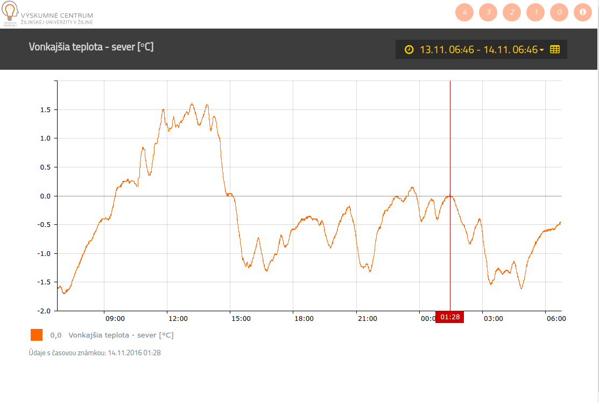
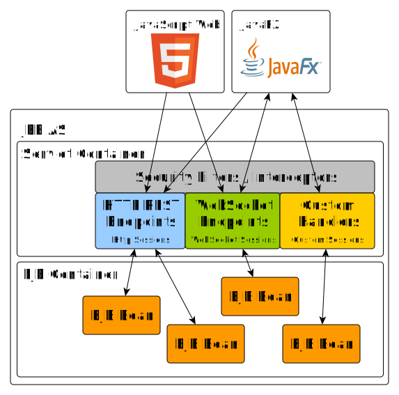

JEE7 Real-Time
(web) applications

|
Juraj VeverkaJava and JEE developer with 10+ Years experienceParticipated on many international projects Participating on solution architecture designs Solutions based on WildFly / Jetty ... Currently working on OpenDaylight project Raspberry PI and IoT enthusiast |
About this presentation
- Not so traditional development approach
- near real-time experience
- Servlet 3.1 and JAX-RS capabilities
- WebSockets - of course !
- Beyond JEE - tips for improvements
- What's expected in JEE8/9
- DEMO Included: HybridApplication
- Other examples: jee-examples
- Not Included: hard real-time
JEE apps are usually ...
- Transactional - one transaction per request
- Thread model - one thread per request
- Request/Response - request->processing->response
- DB centric - Hibernate/JPA with SQL database
- Web Interface - server side rendering (JSF)
- Monolithical - single war or few war/ears
JEE apps might be also ...
- Reactive - event driven client-server communication
- Near Real-Time - low latency responses
- Effective - better http stack utilization
- Heterogeneous - support different client technologies
- Full-duplex - communication with server during user's session.
JEE7 technologies

JEE - Java clients
- JEE technologies for JavaSE/JavaFX clients
- JMS - client server messaging
- Remote EJB calls
- ACC - Application Client Container
JEE - HTTP/All clients
- JEE technologies for HTTP/HTML5 clients
- Servlet 3.1, JAX-RS 2.0 - REST APIs
- HTTP protocol upgrade
- WebSockets 1.0 - JSR356
- JSF - Java Server Faces *
- Integrates very well in heterogeneous environment
- Suitable for Web Browser clients
- Suitable M2M integrations
JSF ... is a problem
- JSF is excellent for server-side rendering
- Problematic for real-time applications
- Can be adapted for real-time user experience
- Combination of JSF, websockets, JavaScript
JSF and real-time
- Use partial rendering on data change
- Independent JavaScript componets
- Some JSF libraries have support for websockets
- Primefaces - p:socket component
- Primefaces - p:remoteCommad and custom JavaScript
JSF and real-time
Primefaces real-time
use p:remoteCommand in view
<h:form>
<p:growl id="msgs" showDetail="true" />
<p:remoteCommand name="partialUpdate" update="msgs"
actionListener="#{remoteCommandView.execute}" />
<h:form>
Primefaces real-time
- Use custom websocket connection
- Custom javascript to update view
- Easy to update JSF components and HTML/SVG in one view
function onMessage(message) {
partialUpdate();
//update other components
}
HTTP protocol upgrade
- Servlet 3.1 - Protocol upgrade
- Full duplex communication using own protocol
- Handshake - protocol negotiation
- Full duplex TCP connection
- Close from client or server
- Demo on Github: servlet-04_protocol-upgrade
- WebSocket is based on HTTP protocol upgrade
HTTP protocol upgrade
1. Implement yourjavax.servlet.http.HttpUpgradeHandler
public class CustomProtocoloUpgradeHandler implements HttpUpgradeHandler {
@Override
public void init(WebConnection webConnection) {
ServletInputStream is = webConnection.getInputStream();
ServletOutputStream os = webConnection.getOutputStream();
//handle read/write messages
}
@Override
public void destroy() {
}
}
HTTP protocol upgrade
2. Use your HttpUpgradeHandler in servlet
@WebServlet(urlPatterns = { "/customProtocolEndpoint" })
public class ProtocolUpgradeServlet extends HttpServlet {
@Override
public void doGet(HttpServletRequest request,
HttpServletResponse response) {
String protocolName = request.getHeader("Upgrade");
if (MessageUtils.PROTOCOL_NAME.equals(protocolName)) {
response.setStatus(101);
response.setHeader("Upgrade", MessageUtils.PROTOCOL_NAME);
response.setHeader("Connection", "Upgrade");
request.upgrade(CustomProtocoloUpgradeHandler.class);
}
}
}

HTTP protocol upgrade - advandages
- Usually only one open port 8080, 443, ...
- Servlet container handles all inbound traffic
- Not limited to HTTP anymore
- Easy to intercept with Servlet filters
- Easier security setup
- Custom sessions and busienss logic
HTTP protocol upgrade
HTTP ServerPush hacks
- Polling - regular period
- Long Polling - request timeout
- Comet / Ajax
- SSE - Server Sent Events
Is HTTP a problem !?
- HTTP is stateless
- HTTP is half-duplex
- HTTP is verbose, complex, resource-wasteful
Payload optimization
- Google Protocol Buffers
- Better/Faster for serialization of structured data
- Supported languges - C, C++, C#, Go, Java, Python, Ruby, ...
- Defines protocol contract
- Backward compatibility support
JAX-RS with protocol buffers
JAX-RS with protocol buffers
- Demo Github: servlet-07_proto-buffers
- Endpoints
http://.../data/getAllUsershttp://.../data/getUserByName?userName=john- Supports 'application/protobuf' media type
JAX-RS with protocol buffers
1. Write your protocol in proto3
syntax = "proto3";
package users;
option java_package = "itx.protobuffers.common";
option java_outer_classname = "UsersProtoc";
message User {
string userName = 1;
string email = 2;
string note = 3;
}
message UserList {
repeated User user = 1;
}
JAX-RS with protocol buffers
2. Create JAX-RS Provider for reading and writing
@Provider
@Produces("application/protobuf")
@Consumes("application/protobuf")
public class ProtoBufferProvider implements MessageBodyReader, MessageBodyWriter {
@Override
public void writeTo(Object t, Class type, Type genericType, Annotation[] annotations, MediaType mediaType,
MultivaluedMap httpHeaders, OutputStream entityStream) throws IOException, WebApplicationException {
...
}
@Override
public Object readFrom(Class type, Type genericType, Annotation[] annotations, MediaType mediaType,
MultivaluedMap httpHeaders, InputStream entityStream) throws IOException, WebApplicationException {
...
}
}
JAX-RS with protocol buffers
3. Create JAX-RS endpoint
@Path("data")
public class ProtoBufferService {
@GET
@Produces("application/protobuf")
@Path("getAllUsers")
public Response getAllUsers() {
return Response.ok(dataService.getAllUsers()).build();
}
@GET
@Produces("application/protobuf")
@Path("getUserByName")
public Response getUserByName(@QueryParam("userName") String userName) {
User user = dataService.getUserByName(userName);
return Response.serverError().build();
}
}
JAX-RS with protocol buffers
4. Create JAX-RS client
public static void main(String[] args) {
Client client = ClientBuilder.newBuilder()
.register(ProtoBufferProvider.class)
.build();
WebTarget target = client.target(config.getServiceURLUserList());
Builder builder = target.request();
UserList userList = builder.get(UserList.class);
}
WebSockets
- Dramatic reduction in network latency and traffic.
- WebSocket frame is just 2 bytes overhead.
- Mature JavaScript API.
- Supports HTTP proxies, filtering, authentication.
- Suitable also for native client integration
WebSockets
- IETF - RFC-6455
- JSR 356 - Java API for WebSocket
- Protocol is an independent TCP-based protocol.
- Only relationship to HTTP is that its handshake is interpreted by HTTP servers as an Upgrade request
- WebSocket is thin layer on top of TCP

WebSockets with proto buffers
- We can go even faster !
- Easy to use proto messages instead JSOM or XML
- Reuse existing REST API proto messages
- @PathParam to process different message types
- Wrapper message in case of single WS endpoint
WebSockets with proto buffers
Proto wrapper message
message WrapperMessage {
oneof msg {
LoginRequest loginRequest = 1;
LoginResponse loginResponse = 2;
TestRequest testRequest = 3;
TestResponse testResponse = 4;
...
}
}
WebSockets with proto buffers
Server or Client end-point
@ServerEndpoint("/ws/wsendpoint")
public class WSEndpoint {
@OnMessage
public void onMessage(String message, Session session) {
//JSON or XML handling
}
@OnMessage
public void onMessage(byte[] message, Session session) {
WrapperMessage wm = WrapperMessage.parseFrom(message);
int messageTypeId = wm.getMsgCase().getNumber();
switch (messageTypeId) {
//message handling by type
}
}
}
WebSockets with proto buffers
Sending proto messages
public void sendMessage(Session session, Message message,
boolean useBinary) throws IOException {
if (useBinary) {
message.writeTo(new ByteArrayOutputStream());
ByteBuffer bb = ByteBuffer.wrap(entityOutputStream.toByteArray());
session.getAsyncRemote().sendBinary(bb);
} else {
String jsonMessage = JsonFormat.printer()
.includingDefaultValueFields()
.print(message);
session.getAsyncRemote().sendText(jsonMessage);
}
}
Communication patterns
- Simple set of data values
- Display set of immutable data values
- Sensor data, statisctics, ...
- Data series
- Time series data
- Time charts, ...
- Client query results
- Results from database based on user query
- Combination of above
Synchronization of sessions
- For clients using HTTP session and WebSockets
- HttpsSession is usually bound to user identity
- WebSocket session is not bound to HttpSession
- Keep both session types in sync
- Disconnect WebSockets on HttpSession timeout !
- Unattended WebSockets may lead to security leaks
- Verify client identity on Websocket connect
Demo: Hybrid Application

Demo: Hybrid Application
- Clients
- JavaScript - Bootstrap client
- JavaFx - JVM fat client, UI
- RPi - JVM WebSocket client
- Backend
- JEE7 - single war deployed in WildFly 10 AS
Demo: Hybrid Application
Application Topics:- /
- /devices
- /devices/{deviceId}
- /chat
- /chat/{roomId}
- /test
Demo: Hybrid Application
Features:- Admin - management of user sessions
- Devices - control connected devices, sensor readings
- Chat - in real time of course :)
- Test - websocket performance tests
Demo: Hybrid Application
Performance testing using echo messages:- compare json/protocol buffer perfomance
- test different echo message sizes
- test test performance with complex messages
- calculate messges/s and RTT
- test against javascript/JavaFx/JavaSE clients
- test against Explorer, Edge, Chrome, Firefox
- test against x86_64 / ARMv6 / ARMv7 clients
- run tests in parallel
Demo: Hybrid Application
Echo message proto3
message EchoData {
int32 jobId = 1;
int32 ordinal = 2;
string payload = 3;
repeated EchoStructuredPayload structuredPayload = 4;
}
message EchoStructuredPayload {
int64 timestamp = 1;
string message = 2;
double value = 3;
bool active = 4;
}
Demo: Hybrid Application
Simple Echo message example in JSON
{
jobId: 1,
odinal: 32,
payload: "xxx",
structuredPayload: null
}
Demo: Hybrid Application
Structured Echo message example in JSON
{
jobId: 1,
odinal: 32,
payload: "hello java",
structuredPayload: [
{
timestamp: 1453546512, message: "messsage: 0",
value: 125.215, active: true
},
{
timestamp: 1453546515, message: "messsage: 1",
value: 125.218, active: false
},
...
]
}
Demo: Hybrid Application
Raspberry PI stack:
Demo: Hybrid Application
Raspberry PI schematics:
Demo: Hybrid Application
Raspberry PI hardware:
Demo: Hybrid Application
Raspberry PI resources:- PI ZERO, 1 MODEL A+, 2 MODEL B, 3 MODEL B
- HTU21D - temperature and relative humidity sensor
- BMP180 - bosch pressure and temperature sensor
- pi4j project
- itx-rpi-drivers - pi4j drivers
- rpi client - websocket client
Beyond JEE7: JCache
- WildFly subsystem - infinispan
- In-Memory data store
- Used by wildfly internally
- clustering
- web container
- ejb container
- hibernate subsystem
- Local or distributed cache (clustering/HA)
- Data eviction strategies: NONE, LRU, LIRS
- Data expiration strategies: time criteria
- Github demo: jcache-01-lab
Beyond JEE7: JCache
Define custom application cachestandalone-full.xml
<subsystem xmlns="urn:jboss:domain:infinispan:4.0">
...
<cache-container name="jcacheTest" default-cache="jcacheTestdb">
<local-cache name="jcacheTestdb">
<transaction mode="NON_XA"/>
<local-cache>
</cache-container>
...
</subsystem>
Beyond JEE7: JCache
Use it in your beans.
@Stateless
public class CacheAccessBean {
@Resource(lookup="java:jboss/infinispan/container/jcacheTest")
private CacheContainer container;
private Cache<String, String> cache;
@PostConstruct
private void init() {
cache = container.getCache();
}
public String getData(String key) {
return cache.get(key);
}
}
Beyond JEE7: SWAGGER.io
- swagger.io - OpenAPI Specification
- Define a standard, language-agnostic interface to REST APIs
- Like WSDL but easier and better !
- Machine readable API
- Easier integrations in microservice ecosystem
- Easy to use with WildFly JAX-RS
- Github demo: servlet-09_jaxrs-swagger
Future improvements in JEE8
- JEE8 standard - JSR366, Q3/2017
- Servlet 4.0, HTTP/2
- HTTP/2 - eficient and fast HTTP
- Server Sent Events - MediaType.SERVER_SENT_EVENT JAX-RS 2.1
- Easier security APIs
- Async CDI events ?
- ALPN - Application Layer Protocol Negotioation ?
HTTP/2
Advantages over HTTP/1.1- Binary protocol - more efficient
- Is fully multiplexed, instead of ordered and blocking
- Can therefore reuse one TCP connection for parallelism
- Uses header compression to reduce overhead
- Allows servers to “push” responses proactively into client caches
JEE8 - Roadmap
- As presented at JavaOne
- 2017 - Finalize JEE8 specs
- 2018 - Finalize JEE9 specs
- JEE8 & JEE9 - focus on cloud and micro-services.
Q&A
https://github.com/jveverka/jee-examplesReferences
- github/jveverka/jee-examples - this presentation with all examples
- The Reactive Manifesto - principles of reactive systems
- Google Protocol Buffers - efficient message transport
- Reveal JS - made this presentation possible, thanx!
- yEd - diagram and graph editor
- WildFly 10 e-books